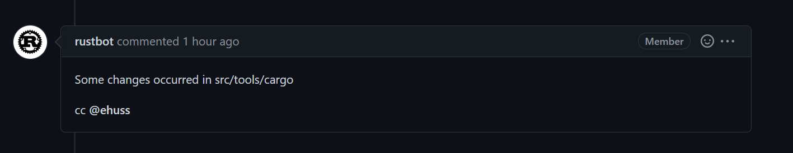
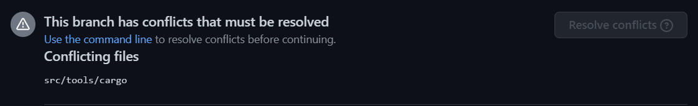
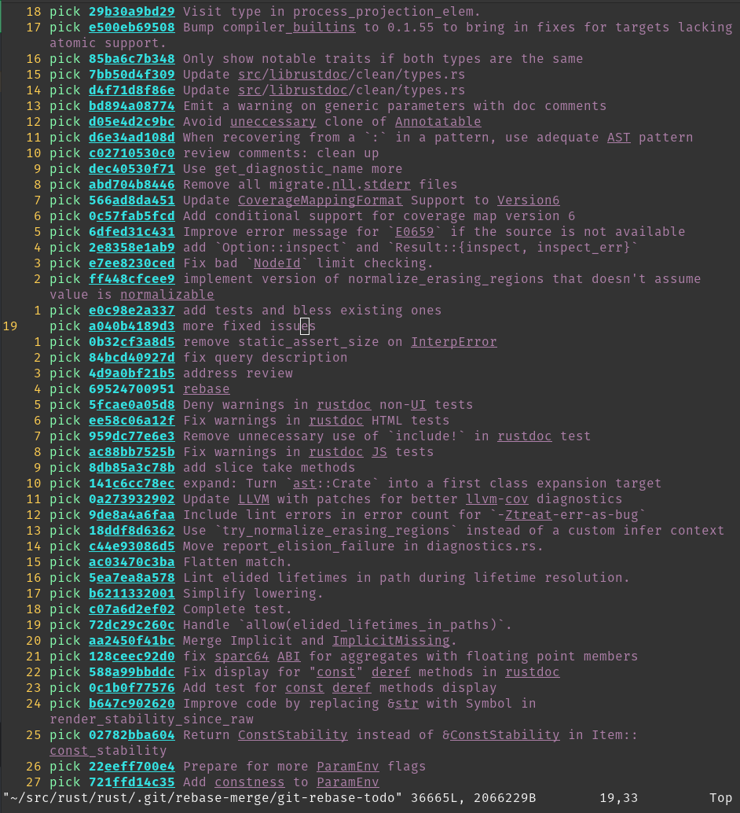
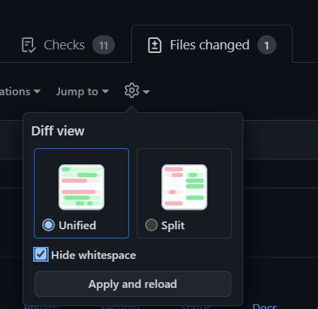
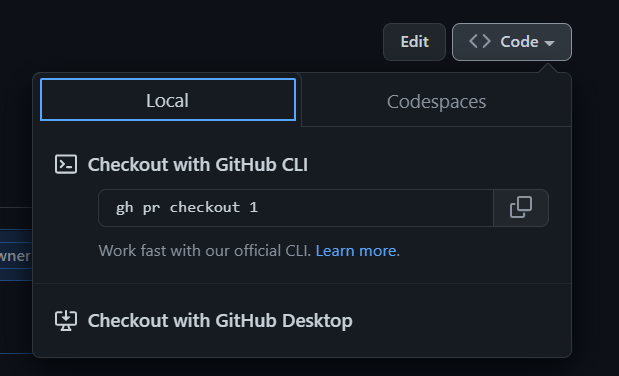

Using Git
- Prerequisites
- Standard Process
- Troubleshooting git issues
- Rebasing and Conflicts
- Advanced Rebasing
- No-Merge Policy
- Tips for reviewing
- Git submodules
The Rust project uses Git to manage its source code. In order to contribute, you'll need some familiarity with its features so that your changes can be incorporated into the compiler.
The goal of this page is to cover some of the more common questions and problems new contributors face. Although some Git basics will be covered here, if you find that this is still a little too fast for you, it might make sense to first read some introductions to Git, such as the Beginner and Getting started sections of this tutorial from Atlassian. GitHub also provides documentation and guides for beginners, or you can consult the more in depth book from Git.
This guide is incomplete. If you run into trouble with git that this page doesn't help with, please open an issue so we can document how to fix it.
Prerequisites
We'll assume that you've installed Git, forked rust-lang/rust, and cloned the forked repo to your PC. We'll use the command line interface to interact with Git; there are also a number of GUIs and IDE integrations that can generally do the same things.
If you've cloned your fork, then you will be able to reference it with origin
in your local repo. It may be helpful to also set up a remote for the official
rust-lang/rust repo via
git remote add upstream https://github.com/rust-lang/rust.git
if you're using HTTPS, or
git remote add upstream git@github.com:rust-lang/rust.git
if you're using SSH.
NOTE: This page is dedicated to workflows for rust-lang/rust, but will likely be
useful when contributing to other repositories in the Rust project.
Standard Process
Below is the normal procedure that you're likely to use for most minor changes and PRs:
- Ensure that you're making your changes on top of master:
git checkout master. - Get the latest changes from the Rust repo:
git pull upstream master --ff-only. (see No-Merge Policy for more info about this). - Make a new branch for your change:
git checkout -b issue-12345-fix. - Make some changes to the repo and test them.
- Stage your changes via
git add src/changed/file.rs src/another/change.rsand then commit them withgit commit. Of course, making intermediate commits may be a good idea as well. Avoidgit add ., as it makes it too easy to unintentionally commit changes that should not be committed, such as submodule updates. You can usegit statusto check if there are any files you forgot to stage. - Push your changes to your fork:
git push --set-upstream origin issue-12345-fix(After adding commits, you can usegit pushand after rebasing or pulling-and-rebasing, you can usegit push --force-with-lease). - Open a PR from your fork to
rust-lang/rust's master branch.
If you end up needing to rebase and are hitting conflicts, see Rebasing. If you want to track upstream while working on long-running feature/issue, see Keeping things up to date.
If your reviewer requests changes, the procedure for those changes looks much the same, with some steps skipped:
- Ensure that you're making changes to the most recent version of your code:
git checkout issue-12345-fix. - Make, stage, and commit your additional changes just like before.
- Push those changes to your fork:
git push.
Troubleshooting git issues
You don't need to clone rust-lang/rust from scratch if it's out of date!
Even if you think you've messed it up beyond repair, there are ways to fix
the git state that don't require downloading the whole repository again.
Here are some common issues you might run into:
I made a merge commit by accident.
Git has two ways to update your branch with the newest changes: merging and rebasing.
Rust uses rebasing. If you make a merge commit, it's not too hard to fix:
git rebase -i upstream/master.
See Rebasing for more about rebasing.
I deleted my fork on GitHub!
This is not a problem from git's perspective. If you run git remote -v,
it will say something like this:
$ git remote -v
origin git@github.com:jyn514/rust.git (fetch)
origin git@github.com:jyn514/rust.git (push)
upstream https://github.com/rust-lang/rust (fetch)
upstream https://github.com/rust-lang/rust (fetch)
If you renamed your fork, you can change the URL like this:
git remote set-url origin <URL>
where the <URL> is your new fork.
I changed a submodule by accident
Usually people notice this when rustbot posts a comment on github that cargo has been modified:

You might also notice conflicts in the web UI:

The most common cause is that you rebased after a change and ran git add . without first running
x.py to update the submodules. Alternatively, you might have run cargo fmt instead of x fmt
and modified files in a submodule, then committed the changes.
To fix it, do the following things:
- See which commit has the accidental changes:
git log --stat -n1 src/tools/cargo - Revert the changes to that commit:
git checkout <my-commit>~ src/tools/cargo. Type~literally but replace<my-commit>with the output from step 1. - Tell git to commit the changes:
git commit --fixup <my-commit> - Repeat steps 1-3 for all the submodules you modified.
- If you modified the submodule in several different commits, you will need to repeat steps 1-3
for each commit you modified. You'll know when to stop when the
git logcommand shows a commit that's not authored by you.
- If you modified the submodule in several different commits, you will need to repeat steps 1-3
for each commit you modified. You'll know when to stop when the
- Squash your changes into the existing commits:
git rebase --autosquash -i upstream/master - Push your changes.
I see "error: cannot rebase" when I try to rebase
These are two common errors to see when rebasing:
error: cannot rebase: Your index contains uncommitted changes.
error: Please commit or stash them.
error: cannot rebase: You have unstaged changes.
error: Please commit or stash them.
(See https://git-scm.com/book/en/v2/Getting-Started-What-is-Git%3F#_the_three_states for the difference between the two.)
This means you have made changes since the last time you made a commit. To be able to rebase, either commit your changes, or make a temporary commit called a "stash" to have them still not be commited when you finish rebasing. You may want to configure git to make this "stash" automatically, which will prevent the "cannot rebase" error in nearly all cases:
git config --global rebase.autostash true
See https://git-scm.com/book/en/v2/Git-Tools-Stashing-and-Cleaning for more info about stashing.
I see 'Untracked Files: src/stdarch'?
This is left over from the move to the library/ directory.
Unfortunately, git rebase does not follow renames for submodules, so you
have to delete the directory yourself:
rm -r src/stdarch
I see <<< HEAD?
You were probably in the middle of a rebase or merge conflict. See
Conflicts for how to fix the conflict. If you don't care about the changes
and just want to get a clean copy of the repository back, you can use git reset:
# WARNING: this throws out any local changes you've made! Consider resolving the conflicts instead.
git reset --hard master
Git is trying to rebase commits I didn't write?
If you see many commits in your rebase list, or merge commits, or commits by other people that you
didn't write, it likely means you're trying to rebase over the wrong branch. For example, you may
have a rust-lang/rust remote upstream, but ran git rebase origin/master instead of git rebase upstream/master. The fix is to abort the rebase and use the correct branch instead:
git rebase --abort
git rebase -i upstream/master
Click here to see an example of rebasing over the wrong branch

Quick note about submodules
When updating your local repository with git pull, you may notice that sometimes
Git says you have modified some files that you have never edited. For example,
running git status gives you something like (note the new commits mention):
On branch master
Your branch is up to date with 'origin/master'.
Changes not staged for commit:
(use "git add <file>..." to update what will be committed)
(use "git restore <file>..." to discard changes in working directory)
modified: src/llvm-project (new commits)
modified: src/tools/cargo (new commits)
no changes added to commit (use "git add" and/or "git commit -a")
These changes are not changes to files: they are changes to submodules (more on
this later). To get rid of those, run git submodule update
(or run any x.py command, which will automatically update the submodules).
Note that,
as of Aug 2022,
there is a bug if you use worktrees,
submodules, and x.py in a commit hook.
If you run into an error like the following,
it's not anything you did wrong:
error: failed to read `/home/joshua/rustc-worktree/src/tools/miri/cargo-miri/Cargo.toml`
Caused by:
No such file or directory (os error 2)
There is a workaround in the issue.
(Note that as of Sept 2022 miri is a subtree and not a submodule.)
Rebasing and Conflicts
When you edit your code locally, you are making changes to the version of rust-lang/rust that existed when you created your feature branch. As such, when you submit your PR it is possible that some of the changes that have been made to rust-lang/rust since then are in conflict with the changes you've made.
When this happens, you need to resolve the conflicts before your changes can be
merged. First, get a local copy of the conflicting changes: Checkout your local
master branch with git checkout master, then git pull upstream master to
update it with the most recent changes.
Rebasing
You're now ready to start the rebasing process. Checkout the branch with your
changes and execute git rebase master.
When you rebase a branch on master, all the changes on your branch are reapplied to the most recent version of master. In other words, Git tries to pretend that the changes you made to the old version of master were instead made to the new version of master. During this process, you should expect to encounter at least one "rebase conflict." This happens when Git's attempt to reapply the changes fails because your changes conflicted with other changes that have been made. You can tell that this happened because you'll see lines in the output that look like
CONFLICT (content): Merge conflict in file.rs
When you open these files, you'll see sections of the form
<<<<<<< HEAD
Original code
=======
Your code
>>>>>>> 8fbf656... Commit fixes 12345
This represents the lines in the file that Git could not figure out how to
rebase. The section between <<<<<<< HEAD and ======= has the code from
master, while the other side has your version of the code. You'll need to
decide how to deal with the conflict. You may want to keep your changes,
keep the changes on master, or combine the two.
Generally, resolving the conflict consists of two steps: First, fix the
particular conflict. Edit the file to make the changes you want and remove the
<<<<<<<, ======= and >>>>>>> lines in the process. Second, check the
surrounding code. If there was a conflict, its likely there are some logical
errors lying around too! It's a good idea to run x.py check here to make sure
there are no glaring errors.
Once you're all done fixing the conflicts, you need to stage the files that had
conflicts in them via git add. Afterwards, run git rebase --continue to let
Git know that you've resolved the conflicts and it should finish the rebase.
Once the rebase has succeeded, you'll want to update the associated branch on
your fork with git push --force-with-lease.
Note that git push will not work properly and say something like this:
! [rejected] issue-xxxxx -> issue-xxxxx (non-fast-forward)
error: failed to push some refs to 'https://github.com/username/rust.git'
hint: Updates were rejected because the tip of your current branch is behind
hint: its remote counterpart. Integrate the remote changes (e.g.
hint: 'git pull ...') before pushing again.
hint: See the 'Note about fast-forwards' in 'git push --help' for details.
The advice this gives is incorrect! Because of Rust's
"no-merge" policy the merge commit created by git pull
will not be allowed in the final PR, in addition to defeating the point of the
rebase! Use git push --force-with-lease instead.
Keeping things up to date
The above section on Rebasing is a specific guide on rebasing work and dealing with merge conflicts. Here is some general advice about how to keep your local repo up-to-date with upstream changes:
Using git pull upstream master while on your local master branch regularly
will keep it up-to-date. You will also want to rebase your feature branches
up-to-date as well. After pulling, you can checkout the feature branches
and rebase them:
git checkout master
git pull upstream master --ff-only # to make certain there are no merge commits
git rebase master feature_branch
git push --force-with-lease # (set origin to be the same as local)
To avoid merges as per the No-Merge Policy, you may want to use
git config pull.ff only (this will apply the config only to the local repo)
to ensure that Git doesn't create merge commits when git pulling, without
needing to pass --ff-only or --rebase every time.
You can also git push --force-with-lease from master to keep your fork's master in sync with
upstream.
Advanced Rebasing
If your branch contains multiple consecutive rewrites of the same code, or if
the rebase conflicts are extremely severe, you can use
git rebase --interactive master to gain more control over the process. This
allows you to choose to skip commits, edit the commits that you do not skip,
change the order in which they are applied, or "squash" them into each other.
Alternatively, you can sacrifice the commit history like this:
# squash all the changes into one commit so you only have to worry about conflicts once
git rebase -i $(git merge-base master HEAD) # and squash all changes along the way
git rebase master
# fix all merge conflicts
git rebase --continue
"Squashing" commits into each other causes them to be merged into a single commit. Both the upside and downside of this is that it simplifies the history. On the one hand, you lose track of the steps in which changes were made, but the history becomes easier to work with.
You also may want to squash just the last few commits together, possibly
because they only represent "fixups" and not real changes. For example,
git rebase --interactive HEAD~2 will allow you to edit the two commits only.
git range-diff
After completing a rebase, and before pushing up your changes, you may want to
review the changes between your old branch and your new one. You can do that
with git range-diff master @{upstream} HEAD.
The first argument to range-diff, master in this case, is the base revision
that you're comparing your old and new branch against. The second argument is
the old version of your branch; in this case, @upstream means the version that
you've pushed to GitHub, which is the same as what people will see in your pull
request. Finally, the third argument to range-diff is the new version of
your branch; in this case, it is HEAD, which is the commit that is currently
checked-out in your local repo.
Note that you can also use the equivalent, abbreviated form git range-diff master @{u} HEAD.
Unlike in regular Git diffs, you'll see a - or + next to another - or +
in the range-diff output. The marker on the left indicates a change between the
old branch and the new branch, and the marker on the right indicates a change
you've committed. So, you can think of a range-diff as a "diff of diffs" since
it shows you the differences between your old diff and your new diff.
Here's an example of git range-diff output (taken from Git's
docs):
-: ------- > 1: 0ddba11 Prepare for the inevitable!
1: c0debee = 2: cab005e Add a helpful message at the start
2: f00dbal ! 3: decafe1 Describe a bug
@@ -1,3 +1,3 @@
Author: A U Thor <author@example.com>
-TODO: Describe a bug
+Describe a bug
@@ -324,5 +324,6
This is expected.
-+What is unexpected is that it will also crash.
++Unexpectedly, it also crashes. This is a bug, and the jury is
++still out there how to fix it best. See ticket #314 for details.
Contact
3: bedead < -: ------- TO-UNDO
(Note that git range-diff output in your terminal will probably be easier to
read than in this example because it will have colors.)
Another feature of git range-diff is that, unlike git diff, it will also
diff commit messages. This feature can be useful when amending several commit
messages so you can make sure you changed the right parts.
git range-diff is a very useful command, but note that it can take some time
to get used to its output format. You may also find Git's documentation on the
command useful, especially their "Examples" section.
No-Merge Policy
The rust-lang/rust repo uses what is known as a "rebase workflow." This means
that merge commits in PRs are not accepted. As a result, if you are running
git merge locally, chances are good that you should be rebasing instead. Of
course, this is not always true; if your merge will just be a fast-forward,
like the merges that git pull usually performs, then no merge commit is
created and you have nothing to worry about. Running git config merge.ff only
(this will apply the config to the local repo).
once will ensure that all the merges you perform are of this type, so that you
cannot make a mistake.
There are a number of reasons for this decision and like all others, it is a tradeoff. The main advantage is the generally linear commit history. This greatly simplifies bisecting and makes the history and commit log much easier to follow and understand.
Tips for reviewing
NOTE: This section is for reviewing PRs, not authoring them.
Hiding whitespace
Github has a button for disabling whitespace changes that may be useful.
You can also use git diff -w origin/master to view changes locally.

Fetching PRs
To checkout PRs locally, you can use git fetch upstream pull/NNNNN/head && git checkout FETCH_HEAD.
You can also use github's cli tool. Github shows a button on PRs where you can copy-paste the command to check it out locally. See https://cli.github.com/ for more info.

Moving large sections of code
Git and Github's default diff view for large moves within a file is quite poor; it will show each line as deleted and each line as added, forcing you to compare each line yourself. Git has an option to show moved lines in a different color:
git log -p --color-moved=dimmed-zebra --color-moved-ws=allow-indentation-change
See the docs for --color-moved for more info.
range-diff
See the relevant section for PR authors. This can be useful for comparing code that was force-pushed to make sure there are no unexpected changes.
Git submodules
NOTE: submodules are a nice thing to know about, but it isn't an absolute
prerequisite to contribute to rustc. If you are using Git for the first time,
you might want to get used to the main concepts of Git before reading this section.
The rust-lang/rust repository uses Git submodules as a way to use other
Rust projects from within the rust repo. Examples include Rust's fork of
llvm-project, cargo and libraries like stdarch and backtrace.
Those projects are developed and maintained in an separate Git (and GitHub)
repository, and they have their own Git history/commits, issue tracker and PRs.
Submodules allow us to create some sort of embedded sub-repository inside the
rust repository and use them like they were directories in the rust repository.
Take llvm-project for example. llvm-project is maintained in the rust-lang/llvm-project
repository, but it is used in rust-lang/rust by the compiler for code generation and
optimization. We bring it in rust as a submodule, in the src/llvm-project folder.
The contents of submodules are ignored by Git: submodules are in some sense isolated
from the rest of the repository. However, if you try to cd src/llvm-project and then
run git status:
HEAD detached at 9567f08afc943
nothing to commit, working tree clean
As far as git is concerned, you are no longer in the rust repo, but in the llvm-project repo.
You will notice that we are in "detached HEAD" state, i.e. not on a branch but on a
particular commit.
This is because, like any dependency, we want to be able to control which version to use.
Submodules allow us to do just that: every submodule is "pinned" to a certain
commit, which doesn't change unless modified manually. If you use git checkout <commit>
in the llvm-project directory and go back to the rust directory, you can stage this
change like any other, e.g. by running git add src/llvm-project. (Note that if
you don't stage the change to commit, then you run the risk that running
x.py will just undo your change by switching back to the previous commit when
it automatically "updates" the submodules.)
This version selection is usually done by the maintainers of the project, and looks like this.
Git submodules take some time to get used to, so don't worry if it isn't perfectly clear yet. You will rarely have to use them directly and, again, you don't need to know everything about submodules to contribute to Rust. Just know that they exist and that they correspond to some sort of embedded subrepository dependency that Git can nicely and fairly conveniently handle for us.